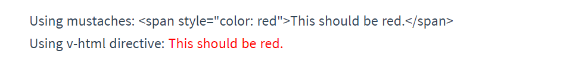
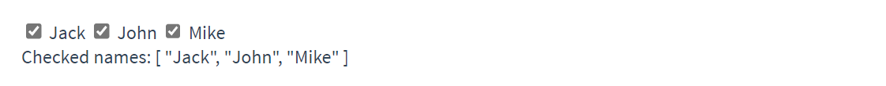

Vue¶
1、介绍¶
Vue.js 是什么
Vue (读音 /vjuː/，类似于 view) 是一套用于构建用户界面的渐进式框架。与其它大型框架不同的是，Vue 被设计为可以自底向上逐层应用。Vue 的核心库只关注视图层，不仅易于上手，还便于与第三方库或既有项目整合。另一方面，当与现代化的工具链以及各种支持类库结合使用时，Vue 也完全能够为复杂的单页应用提供驱动。
安装
创建一个 .html 文件，然后通过如下方式引入 Vue：
<!-- 开发环境版本，包含了有帮助的命令行警告 -->
<script src="https://cdn.jsdelivr.net/npm/vue@2/dist/vue.js"></script>
或者：
<!-- 生产环境版本，优化了尺寸和速度 -->
<script src="https://cdn.jsdelivr.net/npm/vue@2"></script>
2、Vue 实例¶
2.1、创建一个 Vue 实例¶
每个 Vue 应用都是通过用 Vue 函数创建一个新的 Vue 实例开始的：
var vm = new Vue({
// 选项
})
2.2、数据与方法¶
当一个 Vue 实例被创建时，它将 data 对象中的所有的 property 加入到 Vue 的响应式系统中。当这些 property 的值发生改变时，视图将会产生 “响应”，即匹配更新为新的值：
// 我们的数据对象
var data = { a: 1 }
// 该对象被加入到一个 Vue 实例中
var vm = new Vue({
data: data
})
// 获得这个实例上的 property
// 返回源数据中对应的字段
vm.a == data.a // => true
// 设置 property 也会影响到原始数据
vm.a = 2
data.a // => 2
// ……反之亦然
data.a = 3
vm.a // => 3
当这些数据改变时，视图会进行重渲染。但是只有当实例被创建时就已经存在于 data 中的 property 才是响应式的。也就是说如果你添加一个新的 property：
vm.b = 'hi'
那么对 b 的改动将不会触发任何视图的更新。如果你知道你会在晚些时候需要一个 property，但是一开始它为空或不存在，那么你仅需要设置一些初始值：
data: {
newTodoText: '',
visitCount: 0,
hideCompletedTodos: false,
todos: [],
error: null
}
这里唯一的例外是使用 Object.freeze()，这会阻止修改现有的 property，也意味着响应系统无法再追踪变化。
var obj = {
foo: 'bar'
}
Object.freeze(obj)
new Vue({
el: '#app',
data: obj
})
<div id="app">
<p>{{ foo }}</p>
<!-- 这里的 `foo` 不会更新！ -->
<button v-on:click="foo = 'baz'">Change it</button>
</div>
除了数据 property，Vue 实例还暴露了一些有用的实例 property 与方法。它们都有前缀 $，以便与用户定义的 property 区分开来。例如：
var data = { a: 1 }
var vm = new Vue({
el: '#example',
data: data
})
vm.$data === data // => true
vm.$el === document.getElementById('example') // => true
// $watch 是一个实例方法
vm.$watch('a', function (newValue, oldValue) {
// 这个回调将在 `vm.a` 改变后调用
})
2.3、生命周期钩子¶
每个 Vue 实例在被创建时都要经过一系列的初始化过程——例如，需要设置数据监听、编译模板、将实例挂载到 DOM 并在数据变化时更新 DOM 等。同时在这个过程中也会运行一些叫做生命周期钩子的函数。
比如 created 钩子可以用来在一个实例被创建之后执行代码：
new Vue({
data: {
a: 1
},
created: function () {
// `this` 指向 vm 实例
console.log('a is: ' + this.a)
}
})
// => "a is: 1"
也有一些其它的钩子，在实例生命周期的不同阶段被调用，如 mounted、updated 和 destroyed。生命周期钩子的 this 上下文指向调用它的 Vue 实例。
不要在选项 property 或回调上使用箭头函数，比如
created: () => console.log(this.a)或
vm.$watch('a', newValue => this.myMethod())。因为箭头函数并没有this，this会作为变量一直向上级词法作用域查找，直至找到为止，经常导致"Uncaught TypeError: Cannot read property of undefined" 或 "Uncaught TypeError: this.myMethod is not a function"之类的错误。
生命周期图示

2.4、模板语法¶
Vue.js 使用了基于 HTML 的模板语法，允许开发者声明式地将 DOM 绑定至底层 Vue 实例的数据。所有 Vue.js 的模板都是合法的 HTML，所以能被遵循规范的浏览器和 HTML 解析器解析。
在底层的实现上，Vue 将模板编译成虚拟 DOM 渲染函数。结合响应系统，Vue 能够智能地计算出最少需要重新渲染多少组件，并把 DOM 操作次数减到最少。
2.4.1、插值¶
文本
数据绑定最常见的形式就是使用 “Mustache” 语法 (双大括号) 的文本插值：
<span>Message: {{ msg }}</span>
Mustache 标签将会被替代为对应数据对象上 msg property 的值。无论何时，绑定的数据对象上 msg property 发生了改变，插值处的内容都会更新。
通过使用 v-once 指令，你也能执行一次性地插值，当数据改变时，插值处的内容不会更新。但这会影响到该节点上的其它数据绑定：
<span v-once>这个将不会改变: {{ msg }}</span>
原始 HTML
双大括号会将数据解释为普通文本，而非 HTML 代码。为了输出真正的 HTML，需要使用 v-html 指令：
<p>Using mustaches: {{ rawHtml }}</p>
<p>Using v-html directive: <span v-html="rawHtml"></span></p>

这个 span 的内容将会被替换成为 property 值 rawHtml，直接作为 HTML——会忽略解析 property 值中的数据绑定。
你的站点上动态渲染的任意 HTML 可能会非常危险，因为它很容易导致 XSS 攻击。请只对可信内容使用 HTML 插值，绝不要对用户提供的内容使用插值。
Attribute
Mustache 语法不能作用在 HTML attribute 上，遇到这种情况应该使用 v-bind 指令：
<div v-bind:id="dynamicId"></div>
对于布尔 attribute (它们只要存在就意味着值为 true)，v-bind 工作起来略有不同，在这个例子中：
<button v-bind:disabled="isButtonDisabled">Button</button>
如果 isButtonDisabled 的值是 null、undefined 或 false，则 disabled attribute 甚至不会被包含在渲染出来的 <button> 元素中。
使用 JavaScript 表达式
对于所有的数据绑定，Vue.js 都提供了完全的 JavaScript 表达式支持：
{{ number + 1 }}
{{ ok ? 'YES' : 'NO' }}
{{ message.split('').reverse().join('') }}
<div v-bind:id="'list-' + id"></div>
这些表达式会在所属 Vue 实例的数据作用域下作为 JavaScript 被解析。有个限制就是，每个绑定都只能包含单个表达式，所以下面的例子都不会生效。
<!-- 这是语句，不是表达式 -->
{{ var a = 1 }}
<!-- 流控制也不会生效，请使用三元表达式 -->
{{ if (ok) { return message } }}
模板表达式都被放在沙盒中，只能访问全局变量的一个白名单，如
Math和Date。你不应该在模板表达式中试图访问用户定义的全局变量。
2.4.2、指令¶
指令 (Directives) 是带有 v- 前缀的特殊 attribute。指令 attribute 的值预期是单个 JavaScript 表达式 (v-for 是例外情况)。指令的职责是，当表达式的值改变时，将其产生的连带影响，响应式地作用于 DOM。
<p v-if="seen">现在你看到我了</p>
这里 v-if 指令将根据表达式 seen 的值的真假来插入/移除 <p> 元素。
参数
一些指令能够接收一个 “参数”，在指令名称之后以冒号表示。例如，v-bind 指令可以用于响应式地更新 HTML attribute：
<a v-bind:href="url">...</a>
在这里 href 是参数，告知 v-bind 指令将该元素的 href attribute 与表达式 url 的值绑定。
另一个例子是 v-on 指令，它用于监听 DOM 事件：
<a v-on:click="doSomething">...</a>
动态参数
从 2.6.0 开始，可以用方括号括起来的 JavaScript 表达式作为一个指令的参数：
<a v-bind:[attributeName]="url"> ... </a>
这里的 attributeName 会被作为一个 JavaScript 表达式进行动态求值，求得的值将会作为最终的参数来使用。例如，如果你的 Vue 实例有一个 data property attributeName，其值为 "href"，那么这个绑定将等价于 v-bind:href。
同样地，你可以使用动态参数为一个动态的事件名绑定处理函数：
<a v-on:[eventName]="doSomething"> ... </a>
在这个示例中，当 eventName 的值为 "focus" 时，v-on:[eventName] 将等价于 v-on:focus。
动态参数预期会求出一个字符串，异常情况下值为 null。这个特殊的 null 值可以被显性地用于移除绑定。任何其它非字符串类型的值都将会触发一个警告。
动态参数表达式有一些语法约束，因为某些字符，如空格和引号，放在 HTML attribute 名里是无效的。例如：
<!-- 这会触发一个编译警告 -->
<a v-bind:['foo' + bar]="value"> ... </a>
变通的办法是使用没有空格或引号的表达式，或用计算属性替代这种复杂表达式。
在 DOM 中使用模板时 (直接在一个 HTML 文件里撰写模板)，还需要避免使用大写字符来命名键名，因为浏览器会把 attribute 名全部强制转为小写：
<!--
在 DOM 中使用模板时这段代码会被转换为 `v-bind:[someattr]`。
除非在实例中有一个名为“someattr”的 property，否则代码不会工作。
-->
<a v-bind:[someAttr]="value"> ... </a>
修饰符
修饰符 (modifier) 是以半角句号 . 指明的特殊后缀，用于指出一个指令应该以特殊方式绑定。例如，.prevent 修饰符告诉 v-on 指令对于触发的事件调用 event.preventDefault()：
<form v-on:submit.prevent="onSubmit">...</form>
2.4.3、缩写¶
Vue 为 v-bind 和 v-on 这两个最常用的指令，提供了特定简写：
v-bind 缩写
<!-- 完整语法 -->
<a v-bind:href="url">...</a>
<!-- 缩写 -->
<a :href="url">...</a>
<!-- 动态参数的缩写 (2.6.0+) -->
<a :[key]="url"> ... </a>
v-on 缩写
<!-- 完整语法 -->
<a v-on:click="doSomething">...</a>
<!-- 缩写 -->
<a @click="doSomething">...</a>
<!-- 动态参数的缩写 (2.6.0+) -->
<a @[event]="doSomething"> ... </a>
3、计算属性 & 侦听器¶
3.1、计算属性¶
模板内的表达式非常便利，但是设计它们的初衷是用于简单运算的。在模板中放入太多的逻辑会让模板过重且难以维护：
<div id="example">
{{ message.split('').reverse().join('') }}
</div>
在这个地方，模板不再是简单的声明式逻辑。当你想要在模板中的多处包含此翻转字符串时，就会更加难以处理。
所以，对于任何复杂逻辑，你都应当使用计算属性。
基础例子
<div id="example">
<p>Original message: "{{ message }}"</p>
<p>Computed reversed message: "{{ reversedMessage }}"</p>
</div>
var vm = new Vue({
el: '#example',
data: {
message: 'Hello'
},
computed: {
// 计算属性的 getter
reversedMessage: function () {
// `this` 指向 vm 实例
return this.message.split('').reverse().join('')
}
}
})

这里声明了一个计算属性 reversedMessage。我们提供的函数将用作 property vm.reversedMessage 的 getter 函数：
console.log(vm.reversedMessage) // => 'olleH'
vm.message = 'Goodbye'
console.log(vm.reversedMessage) // => 'eybdooG'
Vue 知道 vm.reversedMessage 依赖于 vm.message，因此当 vm.message 发生改变时，所有依赖 vm.reversedMessage 的绑定也会更新。
计算属性缓存 vs 方法
你可能已经注意到我们可以通过在表达式中调用方法来达到同样的效果：
<p>Reversed message: "{{ reversedMessage() }}"</p>
// 在组件中
methods: {
reversedMessage: function () {
return this.message.split('').reverse().join('')
}
}
我们可以将同一函数定义为一个方法而不是一个计算属性。两种方式的最终结果确实是完全相同的。然而，不同的是计算属性是基于它们的响应式依赖进行缓存的。只在相关响应式依赖发生改变时它们才会重新求值。这就意味着只要 message 还没有发生改变，多次访问 reversedMessage 计算属性会立即返回之前的计算结果，而不必再次执行函数。
这也同样意味着下面的计算属性将不再更新，因为 Date.now() 不是响应式依赖：
computed: {
now: function () {
return Date.now()
}
}
相比之下，每当触发重新渲染时，调用方法将总会再次执行函数。
计算属性的 setter
计算属性默认只有 getter，不过在需要时你也可以提供一个 setter：
// ...
computed: {
fullName: {
// getter
get: function () {
return this.firstName + ' ' + this.lastName
},
// setter
set: function (newValue) {
var names = newValue.split(' ')
this.firstName = names[0]
this.lastName = names[names.length - 1]
}
}
}
// ...
现在再运行 vm.fullName = 'John Doe' 时，setter 会被调用，vm.firstName 和 vm.lastName 也会相应地被更新。
3.2、侦听器¶
Vue 通过 watch 选项提供了一个更通用的方法，来响应数据的变化。当需要在数据变化时执行异步或开销较大的操作时，这个方式是最有用的。
<div id="watch-example">
<p>
Ask a yes/no question:
<input v-model="question">
</p>
<p>{{ answer }}</p>
</div>
<!-- 提供这些功能以保持精简。这也可以让你自由选择自己更熟悉的工具。 -->
<script src="https://cdn.jsdelivr.net/npm/axios@0.12.0/dist/axios.min.js"></script>
<script src="https://cdn.jsdelivr.net/npm/lodash@4.13.1/lodash.min.js"></script>
<script>
var watchExampleVM = new Vue({
el: '#watch-example',
data: {
question: '',
answer: 'I cannot give you an answer until you ask a question!'
},
watch: {
// 如果 `question` 发生改变，这个函数就会运行
question: function (newQuestion, oldQuestion) {
this.answer = 'Waiting for you to stop typing...'
this.debouncedGetAnswer()
}
},
created: function () {
// `_.debounce` 是一个通过 Lodash 限制操作频率的函数。
// 在这个例子中，我们希望限制访问 yesno.wtf/api 的频率
// AJAX 请求直到用户输入完毕才会发出。想要了解更多关于
// `_.debounce` 函数 (及其近亲 `_.throttle`) 的知识，
// 请参考：https://lodash.com/docs#debounce
this.debouncedGetAnswer = _.debounce(this.getAnswer, 500)
},
methods: {
getAnswer: function () {
if (this.question.indexOf('?') === -1) {
this.answer = 'Questions usually contain a question mark. ;-)'
return
}
this.answer = 'Thinking...'
var vm = this
axios.get('https://yesno.wtf/api')
.then(function (response) {
vm.answer = _.capitalize(response.data.answer)
})
.catch(function (error) {
vm.answer = 'Error! Could not reach the API. ' + error
})
}
}
})
</script>
在这个示例中，使用 watch 选项允许我们执行异步操作 (访问一个 API)，限制我们执行该操作的频率，并在我们得到最终结果前，设置中间状态。这些都是计算属性无法做到的。
除了 watch 选项之外，还可以使用命令式的 vm.$watch API。
计算属性 vs 侦听属性
当你有一些数据需要随着其它数据变动而变动时，很容易滥用 watch。然而，通常更好的做法是使用计算属性而不是命令式的 watch 回调。细想一下这个例子：
<div id="demo">{{ fullName }}</div>
var vm = new Vue({
el: '#demo',
data: {
firstName: 'Foo',
lastName: 'Bar',
fullName: 'Foo Bar'
},
watch: {
firstName: function (val) {
this.fullName = val + ' ' + this.lastName
},
lastName: function (val) {
this.fullName = this.firstName + ' ' + val
}
}
})
上面的代码实现了当 firstName 或者 lastName 改动的时候，同步修改 fullName 的值。可以使用更简便的计算属性实现：
var vm = new Vue({
el: '#demo',
data: {
firstName: 'Foo',
lastName: 'Bar'
},
computed: {
fullName: function () {
return this.firstName + ' ' + this.lastName
}
}
})
4、条件 & 列表渲染¶
4.1、条件渲染¶
4.1.1、v-if¶
v-if 指令用于条件性地渲染一块内容。这块内容只会在指令的表达式返回 truthy 值的时候被渲染。
<h1 v-if="awesome">Vue is awesome!</h1>
也可以用 v-else 添加一个 “else 块”：
<h1 v-if="awesome">Vue is awesome!</h1>
<h1 v-else>Oh no 😢</h1>
在 <template> 元素上使用 v-if 条件渲染分组
因为 v-if 是一个指令，所以必须将它添加到一个元素上。但是如果想切换多个元素呢？此时可以把一个 <template> 元素当做不可见的包裹元素，并在上面使用 v-if。最终的渲染结果将不包含 <template> 元素。
<template v-if="ok">
<h1>Title</h1>
<p>Paragraph 1</p>
<p>Paragraph 2</p>
</template>
v-else
你可以使用 v-else 指令来表示 v-if 的 “else 块”：
<div v-if="Math.random() > 0.5">
Now you see me
</div>
<div v-else>
Now you don't
</div>
v-else 元素必须紧跟在带 v-if 或者 v-else-if 的元素的后面，否则它将不会被识别。
v-else-if
v-else-if，顾名思义，充当 v-if 的“else-if 块”，可以连续使用：
<div v-if="type === 'A'">
A
</div>
<div v-else-if="type === 'B'">
B
</div>
<div v-else-if="type === 'C'">
C
</div>
<div v-else>
Not A/B/C
</div>
类似于 v-else，v-else-if 也必须紧跟在带 v-if 或者 v-else-if 的元素之后。
用 key 管理可复用的元素
Vue 会尽可能高效地渲染元素，通常会复用已有元素而不是从头开始渲染。例如，如果你允许用户在不同的登录方式之间切换：
<template v-if="loginType === 'username'">
<label>Username</label>
<input placeholder="Enter your username">
</template>
<template v-else>
<label>Email</label>
<input placeholder="Enter your email address">
</template>
那么在上面的代码中切换 loginType 将不会清除用户已经输入的内容。因为两个模板使用了相同的元素，<input> 不会被替换掉——仅仅是替换了它的 placeholder。


这样也不总是符合实际需求，所以 Vue 提供了一种方式来表达“这两个元素是完全独立的，不要复用它们”。只需添加一个具有唯一值的 key attribute 即可：
<template v-if="loginType === 'username'">
<label>Username</label>
<input placeholder="Enter your username" key="username-input">
</template>
<template v-else>
<label>Email</label>
<input placeholder="Enter your email address" key="email-input">
</template>
注意，<label> 元素仍然会被高效地复用，因为它们没有添加 key attribute。
4.1.2、v-show¶
另一个用于根据条件展示元素的选项是 v-show 指令。用法大致一样：
h1 v-show="ok">Hello!</h1>
不同的是带有 v-show 的元素始终会被渲染并保留在 DOM 中。v-show 只是简单地切换元素的 CSS property display。
注意，
v-show不支持<template>元素，也不支持v-else。
v-if vs v-show
v-if 是 “真正” 的条件渲染，因为它会确保在切换过程中条件块内的事件监听器和子组件适当地被销毁和重建。
v-if 也是惰性的：如果在初始渲染时条件为假，则什么也不做——直到条件第一次变为真时，才会开始渲染条件块。
相比之下，v-show 就简单得多——不管初始条件是什么，元素总是会被渲染，并且只是简单地基于 CSS 进行切换。
一般来说，v-if 有更高的切换开销，而 v-show 有更高的初始渲染开销。因此，如果需要非常频繁地切换，则使用 v-show 较好；如果在运行时条件很少改变，则使用 v-if 较好。
4.2、列表渲染¶
4.2.1、用 v-for 遍历数组¶
我们可以用 v-for 指令基于一个数组来渲染一个列表。v-for 指令需要使用 item in items 形式的特殊语法，其中 items 是源数据数组，而 item 则是被迭代的数组元素的别名。
<ul id="example-1">
<li v-for="item in items" :key="item.message">
{{ item.message }}
</li>
</ul>
var example1 = new Vue({
el: '#example-1',
data: {
items: [
{ message: 'Foo' },
{ message: 'Bar' }
]
}
})
结果：

在 v-for 块中，我们可以访问所有父作用域的 property。v-for 还支持一个可选的第二个参数，即当前项的索引。
<ul id="example-2">
<li v-for="(item, index) in items">
{{ parentMessage }} - {{ index }} - {{ item.message }}
</li>
</ul>
4.2.2、用 v-for 遍历对象¶
你也可以用 v-for 来遍历一个对象的 property。
<ul id="v-for-object" class="demo">
<li v-for="value in object">
{{ value }}
</li>
</ul>
new Vue({
el: '#v-for-object',
data: {
object: {
title: 'How to do lists in Vue',
author: 'Jane Doe',
publishedAt: '2016-04-10'
}
}
})
结果：

可以提供第二个的参数为 property 名称 (也就是键名)：
<div v-for="(value, name) in object">
{{ name }}: {{ value }}
</div>
用第三个参数作为索引：
<div v-for="(value, name, index) in object">
{{ index }}. {{ name }}: {{ value }}
</div>
在遍历对象时，会按
Object.keys()的结果遍历，但是不能保证它的结果在不同的 JavaScript 引擎下都一致。
4.2.3、维护状态¶
当 Vue 正在更新使用 v-for 渲染的元素列表时，它默认使用 “就地更新” 的策略。如果数据项的顺序被改变，Vue 将不会移动 DOM 元素来匹配数据项的顺序，而是就地更新每个元素，并且确保它们在每个索引位置正确渲染。
这个默认的模式是高效的，但是只适用于不依赖子组件状态或临时 DOM 状态 (例如：表单输入值) 的列表渲染输出。
为了给 Vue 一个提示，以便它能跟踪每个节点的身份，从而重用和重新排序现有元素，你需要为每项提供一个唯一 key attribute：
<div v-for="item in items" v-bind:key="item.id">
<!-- 内容 -->
</div>
建议尽可能在使用 v-for 时提供 key attribute，除非遍历输出的 DOM 内容非常简单，或者是刻意依赖默认行为以获取性能上的提升。
不要使用对象或数组之类的非基本类型值作为
v-for的key。请用字符串或数值类型的值。
4.2.4、数组更新检测¶
变更方法
Vue 将被侦听的数组的变更方法进行了包裹，所以它们也将会触发视图更新。这些被包裹过的方法包括：
push()pop()shift()unshift()splice()sort()reverse()
替换数组
变更方法，顾名思义，会变更调用了这些方法的原始数组。相比之下，也有非变更方法，例如 filter()、concat() 和 slice()。它们不会变更原始数组，而总是返回一个新数组。当使用非变更方法时，可以用新数组替换旧数组：
example1.items = example1.items.filter(function (item) {
return item.message.match(/Foo/)
})
Vue 为了使得 DOM 元素得到最大范围的重用而实现了一些智能的启发式方法，用一个含有相同元素的数组去替换原来的数组是非常高效的操作。
4.2.5、v-for 的其他用法¶
在 v-for 里使用范围值
v-for 也可以接受整数。在这种情况下，它会把模板重复对应次数。
<div>
<span v-for="n in 10">{{ n }} </span>
</div>
结果：

在 <template> 上使用 v-for
类似于 v-if，你也可以利用带有 v-for 的 <template> 来循环渲染一段包含多个元素的内容。比如：
<ul>
<template v-for="item in items">
<li>{{ item.msg }}</li>
<li class="divider" role="presentation"></li>
</template>
</ul>
v-for 与 v-if 一同使用
不推荐在同一元素上使用
v-if和v-for。
当它们处于同一节点，v-for 的优先级比 v-if 更高，这意味着 v-if 将分别重复运行于每个 v-for 循环中。当你只想为部分项渲染节点时，这种优先级的机制会十分有用，如下：
<li v-for="todo in todos" v-if="!todo.isComplete">
{{ todo }}
</li>
上面的代码将只渲染未完成的 todo。
5、样式 & 表单绑定¶
5.1、Class 与 Style 绑定¶
操作元素的 class 列表和内联样式是数据绑定的一个常见需求。因为它们都是 attribute，所以我们可以用 v-bind 处理它们：只需要通过表达式计算出字符串结果即可。不过，字符串拼接麻烦且易错。因此，在将 v-bind 用于 class 和 style 时，Vue.js 做了专门的增强。表达式结果的类型除了字符串之外，还可以是对象或数组。
5.1.1、绑定 HTML Class¶
对象语法
我们可以传给 v-bind:class 一个对象，以动态地切换 class：
<div v-bind:class="{ active: isActive }"></div>
上面的语法表示 active 这个 class 存在与否将取决于数据 property isActive 的 truthiness。
在 JavaScript 中，truthy（真值）指的是在布尔值上下文中，转换后的值为
true的值。被定义为假值以外的任何值都为真值。（即所有除false、0、-0、0n、""、null、undefined和NaN以外的皆为真值）。
你可以在对象中传入更多字段来动态切换多个 class。此外，v-bind:class 指令也可以与普通的 class attribute 共存：
<div
class="static"
v-bind:class="{ active: isActive, 'text-danger': hasError }"
></div>
data: {
isActive: true,
hasError: false
}
结果渲染为：
<div class="static active"></div>
当 isActive 或者 hasError 变化时，class 列表将相应地更新。例如，如果 hasError 的值为 true，class 列表将变为 "static active text-danger"。
绑定的数据对象不必内联定义在模板里：
<div v-bind:class="classObject"></div>
data: {
classObject: {
active: true,
'text-danger': false
}
}
渲染的结果和上面一样。也可以在这里绑定一个返回对象的计算属性。这是一个常用且强大的模式：
<div v-bind:class="classObject"></div>
data: {
isActive: true,
error: null
},
computed: {
classObject: function () {
return {
active: this.isActive && !this.error,
'text-danger': this.error && this.error.type === 'fatal'
}
}
}
数组语法
我们可以把一个数组传给 v-bind:class，以应用一个 class 列表：
<div v-bind:class="[activeClass, errorClass]"></div>
data: {
activeClass: 'active',
errorClass: 'text-danger'
}
渲染为：
<div class="active text-danger"></div>
如果你也想根据条件切换列表中的 class，可以用三元表达式：
<div v-bind:class="[isActive ? activeClass : '', errorClass]"></div>
这样写将始终添加 errorClass，但是只有在 isActive 是 truthy 时才添加 activeClass。
不过，当有多个条件 class 时这样写有些繁琐。所以在数组语法中也可以使用对象语法：
<div v-bind:class="[{ active: isActive }, errorClass]"></div>
5.1.2、绑定内联样式¶
对象语法
v-bind:style 的对象语法十分直观——看着非常像 CSS，但其实是一个 JavaScript 对象。CSS property 名可以用驼峰式 (camelCase) 或短横线分隔 (kebab-case，记得用引号括起来) 来命名：
<div v-bind:style="{ color: activeColor, fontSize: fontSize + 'px' }"></div>
data: {
activeColor: 'red',
fontSize: 30
}
直接绑定到一个样式对象通常更好，这会让模板更清晰：
<div v-bind:style="styleObject"></div>
data: {
styleObject: {
color: 'red',
fontSize: '13px'
}
}
同样的，对象语法常常结合返回对象的计算属性使用。
数组语法
v-bind:style 的数组语法可以将多个样式对象应用到同一个元素上：
<div v-bind:style="[baseStyles, overridingStyles]"></div>
自动添加前缀
当 v-bind:style 使用需要添加浏览器引擎前缀的 CSS property 时，如 transform，Vue.js 会自动侦测并添加相应的前缀。
多重值
从 2.3.0 起可以为 style 绑定中的 property 提供一个包含多个值的数组，常用于提供多个带前缀的值，例如：
<div :style="{ display: ['-webkit-box', '-ms-flexbox', 'flex'] }"></div>
这样写只会渲染数组中最后一个被浏览器支持的值。在本例中，如果浏览器支持不带浏览器前缀的 flexbox，那么就只会渲染 display: flex。
5.2、表单输入绑定¶
5.2.1、基础用法¶
你可以用 v-model 指令在表单 <input>、<textarea> 及 <select> 元素上创建双向数据绑定。它负责监听用户的输入事件以更新数据，并对一些极端场景进行一些特殊处理。
v-model会忽略所有表单元素的value、checked、selectedattribute 的初始值而总是将 Vue 实例的数据作为数据来源。
v-model 在内部为不同的输入元素使用不同的 property 并抛出不同的事件：
- text 和 textarea 元素使用
valueproperty 和input事件； - checkbox 和 radio 使用
checkedproperty 和change事件； - select 字段将
value作为 prop 并将change作为事件。
文本
<input v-model="message" placeholder="edit me">
<p>Message is: {{ message }}</p>
多行文本
<span>Multiline message is:</span>
<p style="white-space: pre-line;">{{ message }}</p>
<br>
<textarea v-model="message" placeholder="add multiple lines"></textarea>

在文本区域插值 (
<textarea>{{text}}</textarea>) 并不会生效，应用v-model来代替。
复选框
单个复选框，绑定到布尔值：
<input type="checkbox" id="checkbox" v-model="checked">
<label for="checkbox">{{ checked }}</label>

多个复选框，绑定到同一个数组：
<input type="checkbox" id="jack" value="Jack" v-model="checkedNames">
<label for="jack">Jack</label>
<input type="checkbox" id="john" value="John" v-model="checkedNames">
<label for="john">John</label>
<input type="checkbox" id="mike" value="Mike" v-model="checkedNames">
<label for="mike">Mike</label>
<br>
<span>Checked names: {{ checkedNames }}</span>
new Vue({
el: '...',
data: {
checkedNames: []
}
})

单选按钮
<div id="example-4">
<input type="radio" id="one" value="One" v-model="picked">
<label for="one">One</label>
<br>
<input type="radio" id="two" value="Two" v-model="picked">
<label for="two">Two</label>
<br>
<span>Picked: {{ picked }}</span>
</div>
new Vue({
el: '#example-4',
data: {
picked: ''
}
})

选择框
单选时：
<div id="example-5">
<select v-model="selected">
<option disabled value="">请选择</option>
<option>A</option>
<option>B</option>
<option>C</option>
</select>
<span>Selected: {{ selected }}</span>
</div>
new Vue({
el: '...',
data: {
selected: ''
}
})
如果
v-model表达式的初始值未能匹配任何选项，<select>元素将被渲染为“未选中”状态。
多选时 (绑定到一个数组)。
用 v-for 渲染的动态选项：
<select v-model="selected">
<option v-for="option in options" v-bind:value="option.value">
{{ option.text }}
</option>
</select>
<span>Selected: {{ selected }}</span>
new Vue({
el: '...',
data: {
selected: 'A',
options: [
{ text: 'One', value: 'A' },
{ text: 'Two', value: 'B' },
{ text: 'Three', value: 'C' }
]
}
})
5.2.2、值绑定¶
对于单选按钮，复选框及选择框的选项，v-model 绑定的值通常是静态字符串 (对于复选框也可以是布尔值)：
<!-- 当选中时，`picked` 为字符串 "a" -->
<input type="radio" v-model="picked" value="a">
<!-- `toggle` 为 true 或 false -->
<input type="checkbox" v-model="toggle">
<!-- 当选中第一个选项时，`selected` 为字符串 "abc" -->
<select v-model="selected">
<option value="abc">ABC</option>
</select>
但是有时我们可能想把值绑定到 Vue 实例的一个动态 property 上，这时可以用 v-bind 实现，并且这个 property 的值可以不是字符串。
复选框
<input
type="checkbox"
v-model="toggle"
true-value="yes"
false-value="no"
>
// 当选中时
vm.toggle === 'yes'
// 当没有选中时
vm.toggle === 'no'
这里的 true-value 和 false-value attribute 并不会影响输入控件的 value attribute，因为浏览器在提交表单时并不会包含未被选中的复选框。如果要确保表单中这两个值中的一个能够被提交，(即 “yes” 或 “no”)，请换用单选按钮。
单选按钮
<input type="radio" v-model="pick" v-bind:value="a">
当选中时
vm.pick === vm.a
选择框的选项
<select v-model="selected">
<!-- 内联对象字面量 -->
<option v-bind:value="{ number: 123 }">123</option>
</select>
// 当选中时
typeof vm.selected // => 'object'
vm.selected.number // => 123
5.2.3、修饰符¶
.lazy
在默认情况下，v-model 在每次 input 事件触发后将输入框的值与数据进行同步 (除了上述输入法组合文字时)。你可以添加 lazy 修饰符，从而转为在 change 事件_之后_进行同步：
<!-- 在“change”时而非“input”时更新 -->
<input v-model.lazy="msg">
.number
如果想自动将用户的输入值转为数值类型，可以给 v-model 添加 number 修饰符：
<input v-model.number="age" type="number">
这通常很有用，因为即使在 type="number" 时，HTML 输入元素的值也总会返回字符串。如果这个值无法被 parseFloat() 解析，则会返回原始的值。
.trim
如果要自动过滤用户输入的首尾空白字符，可以给 v-model 添加 trim 修饰符：
<input v-model.trim="msg">
6、事件处理¶
6.1、监听事件¶
可以用 v-on 指令监听 DOM 事件，并在触发时运行一些 JavaScript 代码。
<div id="example-1">
<button v-on:click="counter += 1">Add 1</button>
<p>The button above has been clicked {{ counter }} times.</p>
</div>
var example1 = new Vue({
el: '#example-1',
data: {
counter: 0
}
})

然而许多事件处理逻辑会更为复杂，所以直接把 JavaScript 代码写在 v-on 指令中是不可行的。因此 v-on 还可以接收一个需要调用的方法名称。
<div id="example-2">
<!-- `greet` 是在下面定义的方法名 -->
<button v-on:click="greet">Greet</button>
</div>
var example2 = new Vue({
el: '#example-2',
data: {
name: 'Vue.js'
},
// 在 `methods` 对象中定义方法
methods: {
greet: function (event) {
// `this` 在方法里指向当前 Vue 实例
alert('Hello ' + this.name + '!')
// `event` 是原生 DOM 事件
if (event) {
alert(event.target.tagName)
}
}
}
})
// 也可以用 JavaScript 直接调用方法
example2.greet() // => 'Hello Vue.js!'


除了直接绑定到一个方法，也可以在内联 JavaScript 语句中调用方法：
<div id="example-3">
<button v-on:click="say('hi')">Say hi</button>
<button v-on:click="say('what')">Say what</button>
</div>
new Vue({
el: '#example-3',
methods: {
say: function (message) {
alert(message)
}
}
})
有时也需要在内联语句处理器中访问原始的 DOM 事件。可以用特殊变量 $event 把它传入方法：
<button v-on:click="warn('Form cannot be submitted yet.', $event)">
Submit
</button>
// ...
methods: {
warn: function (message, event) {
// 现在我们可以访问原生事件对象
if (event) {
event.preventDefault()
}
alert(message)
}
}
6.2、事件修饰符¶
Vue.js 为 v-on 提供了事件修饰符。修饰符是由点开头的指令后缀来表示的：
-
.stop：调用event.stopPropagation()(阻止事件冒泡到父元素，阻止任何父事件处理程序被执行) 。 -
.prevent：调用event.preventDefault()(阻止元素发生默认的行为) 。 -
.capture：添加事件侦听器时使用 capture 模式。 -
.self：只当事件是从侦听器绑定的元素本身触发时才触发回调。 -
.native：监听组件根元素的原生事件。 -
.once：(2.1.4) 只触发一次回调。 -
.passive：(2.3.0) 以{ passive: true }模式添加侦听器这个
.passive修饰符尤其能够提升移动端的性能。
<!-- 阻止单击事件继续传播 -->
<a v-on:click.stop="doThis"></a>
<!-- 提交事件不再重载页面 -->
<form v-on:submit.prevent="onSubmit"></form>
<!-- 修饰符可以串联 -->
<a v-on:click.stop.prevent="doThat"></a>
<!-- 只有修饰符 -->
<form v-on:submit.prevent></form>
<!-- 添加事件监听器时使用事件捕获模式 -->
<!-- 即内部元素触发的事件先在此处理，然后才交由内部元素进行处理 -->
<div v-on:click.capture="doThis">...</div>
<!-- 只当在 event.target 是当前元素自身时触发处理函数 -->
<!-- 即事件不是从内部元素触发的 -->
<div v-on:click.self="doThat">...</div>
<!-- 点击事件将只会触发一次 -->
<a v-on:click.once="doThis"></a>
<!-- 滚动事件的默认行为 (即滚动行为) 将会立即触发 -->
<!-- 而不会等待 `onScroll` 完成 -->
<!-- 这其中包含 `event.preventDefault()` 的情况 -->
<div v-on:scroll.passive="onScroll">...</div>
使用修饰符时，顺序很重要；相应的代码会以同样的顺序产生。因此，用
v-on:click.prevent.self会阻止所有的点击，而v-on:click.self.prevent只会阻止对元素自身的点击。
6.3、按键修饰符¶
Vue 允许为 v-on 在监听键盘事件时添加按键修饰符：
<!-- 只有在 `key` 是 `Enter` 时调用 `vm.submit()` -->
<input v-on:keyup.enter="submit">
按键码
keyCode的事件用法已经被废弃了并可能不会被最新的浏览器支持。
使用 keyCode attribute 也是允许的：
<input v-on:keyup.13="submit">
为了在必要的情况下支持旧浏览器，Vue 提供了绝大多数常用的按键码的别名：
.enter.tab.delete(捕获“删除”和“退格”键).esc.space.up.down.left.right
还可以通过全局 config.keyCodes 对象自定义按键修饰符别名：
// 可以使用 `v-on:keyup.f1`
Vue.config.keyCodes.f1 = 112
6.4、系统修饰键¶
2.1.0 新增。可以用如下修饰符来实现仅在按下相应按键时才触发鼠标或键盘事件的监听器。
.ctrl.alt.shift.meta
<!-- Alt + C -->
<input v-on:keyup.alt.67="clear">
<!-- Ctrl + Click -->
<div v-on:click.ctrl="doSomething">Do something</div>
.exact 修饰符
2.5.0 新增。.exact 修饰符允许你控制由精确的系统修饰符组合触发的事件。
<!-- 即使 Alt 或 Shift 被一同按下时也会触发 -->
<button v-on:click.ctrl="onClick">A</button>
<!-- 有且只有 Ctrl 被按下的时候才触发 -->
<button v-on:click.ctrl.exact="onCtrlClick">A</button>
<!-- 没有任何系统修饰符被按下的时候才触发 -->
<button v-on:click.exact="onClick">A</button>
鼠标按钮修饰符
2.2.0 新增。
.left.right.middle
这些修饰符会限制处理函数仅响应特定的鼠标按钮。
7、组件¶
7.1、基本示例¶
这里有一个 Vue 组件的示例：
// 定义一个名为 button-counter 的新组件
Vue.component('button-counter', {
data: function () {
return {
count: 0
}
},
template: '<button v-on:click="count++">You clicked me {{ count }} times.</button>'
})
组件是可复用的 Vue 实例，且带有一个名字：在这个例子中是 <button-counter>。我们可以在一个通过 new Vue 创建的 Vue 根实例中，把这个组件作为自定义元素来使用：
<div id="components-demo">
<button-counter></button-counter>
</div>
new Vue({ el: '#components-demo' })

因为组件是可复用的 Vue 实例，所以它们与 new Vue 接收相同的选项，例如 data、computed、watch、methods 以及生命周期钩子等。仅有的例外是像 el 这样根实例特有的选项。
组件名大小写
定义组件名的方式有两种：
-
使用 kebab-case
Vue.component('my-component-name', { /* ... */ })当使用 kebab-case (短横线分隔命名) 定义一个组件时，你也必须在引用这个自定义元素时使用 kebab-case，例如
<my-component-name>。 -
使用 PascalCase
Vue.component('MyComponentName', { /* ... */ })当使用 PascalCase (首字母大写命名) 定义一个组件时，你在引用这个自定义元素时两种命名法都可以使用。也就是说
<my-component-name>和<MyComponentName>都是可接受的。注意，尽管如此，直接在 DOM (即非字符串的模板) 中使用时只有 kebab-case 是有效的。
组件的复用
你可以将组件进行任意次数的复用：
<div id="components-demo">
<button-counter></button-counter>
<button-counter></button-counter>
<button-counter></button-counter>
</div>

注意当点击按钮时，每个组件都会各自独立维护它的 count。因为你每用一次组件，就会有一个它的新实例被创建。
data 必须是一个函数
当我们定义这个 <button-counter> 组件时，它的 data 并不是像这样直接提供一个对象：
data: {
count: 0
}
取而代之的是，一个组件的 data 选项必须是一个函数，因此每个实例可以维护一份被返回对象的独立的拷贝：
data: function () {
return {
count: 0
}
}
如果 Vue 没有这条规则，点击一个按钮就可能会影响到其它所有实例。
单个根元素
当构建一个 <blog-post> 组件时，你的模板最终会包含的东西远不止一个标题：
<h3>{{ title }}</h3>
最最起码，你会包含这篇博文的正文：
<h3>{{ title }}</h3>
<div v-html="content"></div>
然而如果你在模板中尝试这样写，Vue 会显示一个错误，并解释道 every component must have a single root element (每个组件必须只有一个根元素)。你可以将模板的内容包裹在一个父元素内，来修复这个问题，例如：
<div class="blog-post">
<h3>{{ title }}</h3>
<div v-html="content"></div>
</div>
解析 DOM 模板时的注意事项
有些 HTML 元素，诸如 <ul>、<ol>、<table> 和 <select>，对于哪些元素可以出现在其内部是有严格限制的。而有些元素，诸如 <li>、<tr> 和 <option>，只能出现在其它某些特定的元素内部。
这会导致我们使用这些有约束条件的元素时遇到一些问题。例如：
<table>
<blog-post-row></blog-post-row>
</table>
这个自定义组件 <blog-post-row> 会被作为无效的内容提升到外部，并导致最终渲染结果出错。幸好这个特殊的 is attribute 给了我们一个变通的办法：
<table>
<tr is="blog-post-row"></tr>
</table>
需要注意的是如果从以下来源使用模板的话，这条限制是不存在的：
- 字符串 (例如：
template: '...') - 单文件组件 (
.vue) <script type="text/x-template">
7.2、组件注册¶
通常一个应用会以一棵嵌套的组件树的形式来组织：

例如，你可能会有页头、侧边栏、内容区等组件，每个组件又包含了其它的像导航链接、博文之类的组件。
为了能在模板中使用，这些组件必须先注册以便 Vue 能够识别。这里有两种组件的注册类型：全局注册和局部注册。
全局注册
到目前为止，我们只用过 Vue.component 来创建组件：
Vue.component('my-component-name', {
// ... options ...
})
这些组件是全局注册的。也就是说它们在注册之后可以用在任何新创建的 Vue 根实例 (new Vue) 的模板中。比如：
Vue.component('component-a', { /* ... */ })
Vue.component('component-b', { /* ... */ })
Vue.component('component-c', { /* ... */ })
new Vue({ el: '#app' })
<div id="app">
<component-a></component-a>
<component-b></component-b>
<component-c></component-c>
</div>
在所有子组件中也是如此，也就是说这三个组件在各自内部也都可以相互使用。
局部注册
全局注册往往是不够理想的。比如，如果你使用一个像 webpack 这样的构建系统，全局注册所有的组件意味着即便你已经不再使用一个组件了，它仍然会被包含在你最终的构建结果中。这造成了用户下载的 JavaScript 的无谓的增加。
在这些情况下可以通过一个普通的 JavaScript 对象来定义组件：
var ComponentA = { /* ... */ }
var ComponentB = { /* ... */ }
var ComponentC = { /* ... */ }
然后在 components 选项中定义你想要使用的组件：
new Vue({
el: '#app',
components: {
'component-a': ComponentA,
'component-b': ComponentB
}
})
对于 components 对象中的每个 property 来说，其 property 名就是自定义元素的名字，其 property 值就是这个组件的选项对象。
注意局部注册的组件在其子组件中不可用。例如，如果你希望 ComponentA 在 ComponentB 中可用，则你需要这样写：
var ComponentA = { /* ... */ }
var ComponentB = {
components: {
'component-a': ComponentA
},
// ...
}
或者如果你通过 Babel 和 webpack 使用 ES2015 模块，那么代码看起来更像：
import ComponentA from './ComponentA.vue'
export default {
components: {
ComponentA
},
// ...
}
注意在 ES2015+ 中，在对象中放一个类似 ComponentA 的变量名其实是 ComponentA: ComponentA 的缩写，即这个变量名同时是：
- 用在模板中的自定义元素的名称
- 包含了这个组件选项的变量名
7.3、Prop¶
Prop 是你可以在组件上注册的一些自定义 attribute。当一个值传递给一个 prop attribute 的时候，它就变成了那个组件实例的一个 property。为了给博文组件传递一个标题，我们可以用一个 props 选项将其包含在该组件可接受的 prop 列表中：
Vue.component('blog-post', {
props: ['title'],
template: '<h3>{{ title }}</h3>'
})
一个组件默认可以拥有任意数量的 prop，任何值都可以传递给任何 prop。
一个 prop 被注册之后，你就可以像这样把数据作为一个自定义 attribute 传递进来：
<blog-post title="My journey with Vue"></blog-post>
<blog-post title="Blogging with Vue"></blog-post>
<blog-post title="Why Vue is so fun"></blog-post>

Prop 的大小写 (camelCase vs kebab-case)
HTML 中的 attribute 名是大小写不敏感的，所以浏览器会把所有大写字符解释为小写字符。这意味着当你使用 DOM 中的模板时，camelCase (驼峰命名法) 的 prop 名需要使用其等价的 kebab-case (短横线分隔命名) 命名：
Vue.component('blog-post', {
// 在 JavaScript 中是 camelCase 的
props: ['postTitle'],
template: '<h3>{{ postTitle }}</h3>'
})
<!-- 在 HTML 中是 kebab-case 的 -->
<blog-post post-title="hello!"></blog-post>
如果你使用字符串模板，那么这个限制就不存在了。
7.3.1、传递静态或动态 Prop¶
可以像这样给 prop 传入一个静态的值：
<blog-post title="My journey with Vue"></blog-post>
prop 也可以通过 v-bind 动态赋值，例如：
<!-- 动态赋予一个变量的值 -->
<blog-post v-bind:title="post.title"></blog-post>
<!-- 动态赋予一个复杂表达式的值 -->
<blog-post
v-bind:title="post.title + ' by ' + post.author.name"
></blog-post>
在上述两个示例中传入的值都是字符串类型的，但实际上任何类型的值都可以传给一个 prop。
传入一个数字
<!-- 即便 `42` 是静态的，我们仍然需要 `v-bind` 来告诉 Vue -->
<!-- 这是一个 JavaScript 表达式而不是一个字符串。-->
<blog-post v-bind:likes="42"></blog-post>
<!-- 用一个变量进行动态赋值。-->
<blog-post v-bind:likes="post.likes"></blog-post>
传入一个布尔值
<!-- 包含该 prop 没有值的情况在内，都意味着 `true`。-->
<blog-post is-published></blog-post>
<!-- 即便 `false` 是静态的，我们仍然需要 `v-bind` 来告诉 Vue -->
<!-- 这是一个 JavaScript 表达式而不是一个字符串。-->
<blog-post v-bind:is-published="false"></blog-post>
<!-- 用一个变量进行动态赋值。-->
<blog-post v-bind:is-published="post.isPublished"></blog-post>
传入一个数组
<!-- 即便数组是静态的，我们仍然需要 `v-bind` 来告诉 Vue -->
<!-- 这是一个 JavaScript 表达式而不是一个字符串。-->
<blog-post v-bind:comment-ids="[234, 266, 273]"></blog-post>
<!-- 用一个变量进行动态赋值。-->
<blog-post v-bind:comment-ids="post.commentIds"></blog-post>
传入一个对象
<!-- 即便对象是静态的，我们仍然需要 `v-bind` 来告诉 Vue -->
<!-- 这是一个 JavaScript 表达式而不是一个字符串。-->
<blog-post
v-bind:author="{
name: 'Veronica',
company: 'Veridian Dynamics'
}"
></blog-post>
<!-- 用一个变量进行动态赋值。-->
<blog-post v-bind:author="post.author"></blog-post>
传入一个对象的所有 property
如果你想要将一个对象的所有 property 都作为 prop 传入，你可以使用不带参数的 v-bind (取代 v-bind:prop-name)。例如，对于一个给定的对象 post：
post: {
id: 1,
title: 'My Journey with Vue'
}
下面的模板：
<blog-post v-bind="post"></blog-post>
等价于：
<blog-post
v-bind:id="post.id"
v-bind:title="post.title"
></blog-post>
7.3.2、单向数据流¶
所有的 prop 都使得其父子 prop 之间形成了一个单向下行绑定：父级 prop 的更新会向下流动到子组件中，但是反过来则不行。这样会防止从子组件意外变更父级组件的状态，从而导致你的应用的数据流向难以理解。
额外的，每次父级组件发生变更时，子组件中所有的 prop 都将会刷新为最新的值。这意味着你不应该在一个子组件内部改变 prop。如果你这样做了，Vue 会在浏览器的控制台中发出警告。
这里有两种常见的试图变更一个 prop 的情形：
-
这个 prop 用来传递一个初始值；这个子组件接下来希望将其作为一个本地的 prop 数据来使用。在这种情况下，最好定义一个本地的 data property 并将这个 prop 用作其初始值：
props: ['initialCounter'], data: function () { return { counter: this.initialCounter } } -
这个 prop 以一种原始的值传入且需要进行转换。在这种情况下，最好使用这个 prop 的值来定义一个计算属性：
props: ['size'], computed: { normalizedSize: function () { return this.size.trim().toLowerCase() } }
注意在 JavaScript 中对象和数组是通过引用传入的，所以对于一个数组或对象类型的 prop 来说，在子组件中改变变更这个对象或数组本身将会影响到父组件的状态。
7.3.3、Prop 类型和验证¶
到这里，我们只看到了以字符串数组形式列出的 prop：
props: ['title', 'likes', 'isPublished', 'commentIds', 'author']
如果你希望每个 prop 都有指定的值类型，可以以对象形式列出 prop，这些 property 的名称和值分别是 prop 各自的名称和类型：
props: {
title: String,
likes: Number,
isPublished: Boolean,
commentIds: Array,
author: Object,
callback: Function,
contactsPromise: Promise // or any other constructor
}
这不仅为你的组件提供了文档，还会在它们遇到错误的类型时从浏览器的 JavaScript 控制台提示用户。
Prop 验证
我们可以为组件的 prop 指定验证要求，例如你知道的这些类型。如果有一个需求没有被满足，则 Vue 会在浏览器控制台中警告你。这在开发一个会被别人用到的组件时尤其有帮助。例如：
Vue.component('my-component', {
props: {
// 基础的类型检查 (`null` 和 `undefined` 会通过任何类型验证)
propA: Number,
// 多个可能的类型
propB: [String, Number],
// 必填的字符串
propC: {
type: String,
required: true
},
// 带有默认值的数字
propD: {
type: Number,
default: 100
},
// 带有默认值的对象
propE: {
type: Object,
// 对象或数组默认值必须从一个工厂函数获取
default: function () {
return { message: 'hello' }
}
},
// 自定义验证函数
propF: {
validator: function (value) {
// 这个值必须匹配下列字符串中的一个
return ['success', 'warning', 'danger'].includes(value)
}
}
}
})
当 prop 验证失败的时候，(开发环境构建版本的) Vue 将会产生一个控制台的警告。
注意那些 prop 会在一个组件实例创建之前进行验证，所以实例的 property (如
data、computed等) 在default或validator函数中是不可用的。
类型检查
type 可以是下列原生构造函数中的一个：
StringNumberBooleanArrayObjectDateFunctionSymbol
额外的，type 还可以是一个自定义的构造函数，并且通过 instanceof 来进行检查确认。例如，给定下列现成的构造函数：
function Person (firstName, lastName) {
this.firstName = firstName
this.lastName = lastName
}
你可以使用：
Vue.component('blog-post', {
props: {
author: Person
}
})
来验证 author prop 的值是否是通过 new Person 创建的。
7.4、自定义事件¶
在我们开发 <blog-post> 组件时，它的一些功能可能要求我们和父级组件进行沟通。例如我们可能会引入一个辅助功能来放大博文的字号，同时让页面的其它部分保持默认的字号。
在其父组件中，我们可以通过添加一个 postFontSize 数据 property 来支持这个功能：
new Vue({
el: '#blog-posts-events-demo',
data: {
posts: [/* ... */],
postFontSize: 1
}
})
它可以在模板中用来控制所有博文的字号：
<div id="blog-posts-events-demo">
<div :style="{ fontSize: postFontSize + 'em' }">
<blog-post
v-for="post in posts"
v-bind:key="post.id"
v-bind:post="post"
></blog-post>
</div>
</div>
现在我们在每篇博文正文之前添加一个按钮来放大字号：
Vue.component('blog-post', {
props: ['post'],
template: `
<div class="blog-post">
<h3>{{ post.title }}</h3>
<button>
Enlarge text
</button>
<div v-html="post.content"></div>
</div>
`
})
问题是这个按钮不会做任何事：
<button>
Enlarge text
</button>
当点击这个按钮时，我们需要告诉父级组件放大所有博文的文本。Vue 实例提供了一个自定义事件的系统来解决这个问题。父级组件可以像处理 native DOM 事件一样通过 v-on 监听子组件实例的任意事件：
<blog-post
...
v-on:enlarge-text="postFontSize += 0.1"
></blog-post>
同时子组件可以通过调用内建的 $emit 方法并传入事件名称来触发一个事件：
<button v-on:click="$emit('enlarge-text')">
Enlarge text
</button>
有了这个 v-on:enlarge-text="postFontSize += 0.1" 监听器，父级组件就会接收该事件并更新 postFontSize 的值。
7.4.1、事件名¶
不同于组件和 prop，事件名不存在任何自动化的大小写转换。而是触发的事件名需要完全匹配监听这个事件所用的名称。举个例子，如果触发一个 camelCase 名字的事件：
this.$emit('myEvent')
则监听这个名字的 kebab-case 版本是不会有任何效果的：
<!-- 没有效果 -->
<my-component v-on:my-event="doSomething"></my-component>
不同于组件和 prop，事件名不会被用作一个 JavaScript 变量名或 property 名，所以就没有理由使用 camelCase 或 PascalCase 了。并且 v-on 事件监听器在 DOM 模板中会被自动转换为全小写 (因为 HTML 是大小写不敏感的)，所以 v-on:myEvent 将会变成 v-on:myevent——导致 myEvent 不可能被监听到。
因此推荐始终使用 kebab-case 的事件名。
7.4.2、使用事件抛出一个值¶
有的时候用一个事件来抛出一个特定的值是非常有用的。例如我们可能想让 <blog-post> 组件决定它的文本要放大多少。这时可以使用 $emit 的第二个参数来提供这个值：
<button v-on:click="$emit('enlarge-text', 0.1)">
Enlarge text
</button>
然后当在父级组件监听这个事件的时候，我们可以通过 $event 访问到被抛出的这个值：
<blog-post
...
v-on:enlarge-text="postFontSize += $event"
></blog-post>
或者，如果这个事件处理函数是一个方法：
<blog-post
...
v-on:enlarge-text="onEnlargeText"
></blog-post>
那么这个值将会作为第一个参数传入这个方法：
methods: {
onEnlargeText: function (enlargeAmount) {
this.postFontSize += enlargeAmount
}
}
7.4.3、在组件上使用 v-model¶
自定义事件也可以用于创建支持 v-model 的自定义输入组件。
<input v-model="searchText">
等价于：
<input
v-bind:value="searchText"
v-on:input="searchText = $event.target.value"
>
当用在组件上时，v-model 则会这样：
<custom-input
v-bind:value="searchText"
v-on:input="searchText = $event"
></custom-input>
为了让它正常工作，这个组件内的 <input> 必须：
- 将其
valueattribute 绑定到一个名叫value的 prop 上 - 在其
input事件被触发时，将新的值通过自定义的input事件抛出
Vue.component('custom-input', {
props: ['value'],
template: `
<input
v-bind:value="value"
v-on:input="$emit('input', $event.target.value)"
>
`
})
现在 v-model 就应该可以在这个组件上完美地工作起来了：
<custom-input v-model="searchText"></custom-input>
自定义组件的 v-model
2.2.0+ 新增
一个组件上的 v-model 默认会利用名为 value 的 prop 和名为 input 的事件，但是像单选框、复选框等类型的输入控件可能会将 value attribute 用于不同的目的。model 选项可以用来避免这样的冲突：
Vue.component('base-checkbox', {
model: {
prop: 'checked',
event: 'change'
},
props: {
checked: Boolean
},
template: `
<input
type="checkbox"
v-bind:checked="checked"
v-on:change="$emit('change', $event.target.checked)"
>
`
})
现在在这个组件上使用 v-model 的时候：
<base-checkbox v-model="lovingVue"></base-checkbox>
这里的 lovingVue 的值将会传入这个名为 checked 的 prop。同时当 <base-checkbox> 触发一个 change 事件并附带一个新的值的时候，这个 lovingVue 的 property 将会被更新。
注意你仍然需要在组件的
props选项里声明checked这个 prop。
7.4.4、将原生事件绑定到组件¶
现在在组件上使用 v-on 只会监听自定义事件 (组件用 $emit 触发的事件)。如果想要在一个组件的根元素上直接监听一个原生事件。这时，你可以使用 v-on 的 .native 修饰符：
<base-input v-on:focus.native="onFocus"></base-input>
在有的时候这是很有用的，不过在你尝试监听一个类似 <input> 的非常特定的元素时，这并不是个好主意。比如上述 <base-input> 组件可能做了如下重构，所以根元素实际上是一个 <label> 元素：
<label>
{{ label }}
<input
v-bind="$attrs"
v-bind:value="value"
v-on:input="$emit('input', $event.target.value)"
>
</label>
这时，父级的 .native 监听器将静默失败。它不会产生任何报错，但是 onFocus 处理函数不会如你预期地被调用。
为了解决这个问题，Vue 提供了一个 $listeners property，它是一个对象，里面包含了作用在这个组件上的所有监听器。例如：
{
focus: function (event) { /* ... */ }
input: function (value) { /* ... */ },
}
有了这个 $listeners property，你就可以配合 v-on="$listeners" 将所有的事件监听器指向这个组件的某个特定的子元素。对于类似 <input> 的你希望它也可以配合 v-model 工作的组件来说，为这些监听器创建一个类似下述 inputListeners 的计算属性通常是非常有用的：
Vue.component('base-input', {
inheritAttrs: false,
props: ['label', 'value'],
computed: {
inputListeners: function () {
var vm = this
// `Object.assign` 将所有的对象合并为一个新对象
return Object.assign({},
// 我们从父级添加所有的监听器
this.$listeners,
// 然后我们添加自定义监听器，
// 或覆写一些监听器的行为
{
// 这里确保组件配合 `v-model` 的工作
input: function (event) {
vm.$emit('input', event.target.value)
}
}
)
}
},
template: `
<label>
{{ label }}
<input
v-bind="$attrs"
v-bind:value="value"
v-on="inputListeners"
>
</label>
`
})
现在 <base-input> 组件是一个完全透明的包裹器了，也就是说它可以完全像一个普通的 <input> 元素一样使用了：所有跟它相同的 attribute 和监听器都可以工作，不必再使用 .native 监听器。
7.5、插槽¶
和 HTML 元素一样，我们经常需要向一个组件传递内容，像这样：
<alert-box>
Something bad happened.
</alert-box>
可能会渲染出这样的东西：

幸好，Vue 自定义的 <slot> 元素让这变得非常简单：
Vue.component('alert-box', {
template: `
<div class="demo-alert-box">
<strong>Error!</strong>
<slot></slot>
</div>
`
})